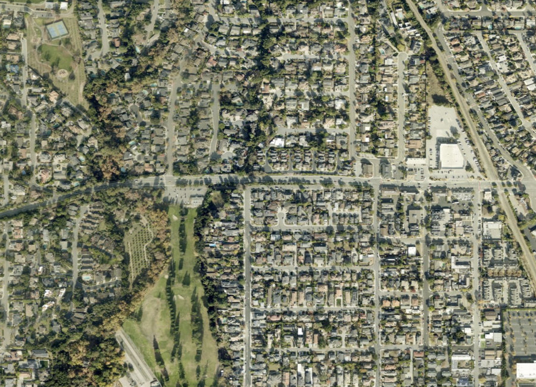
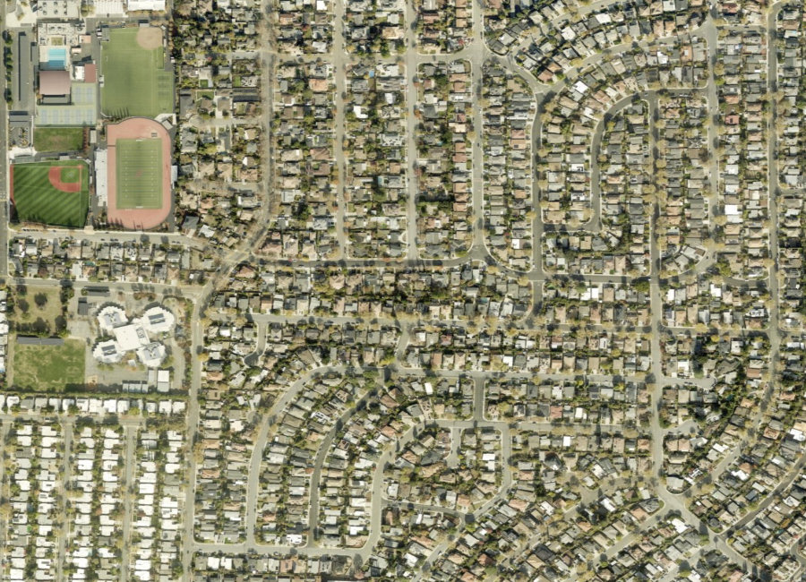
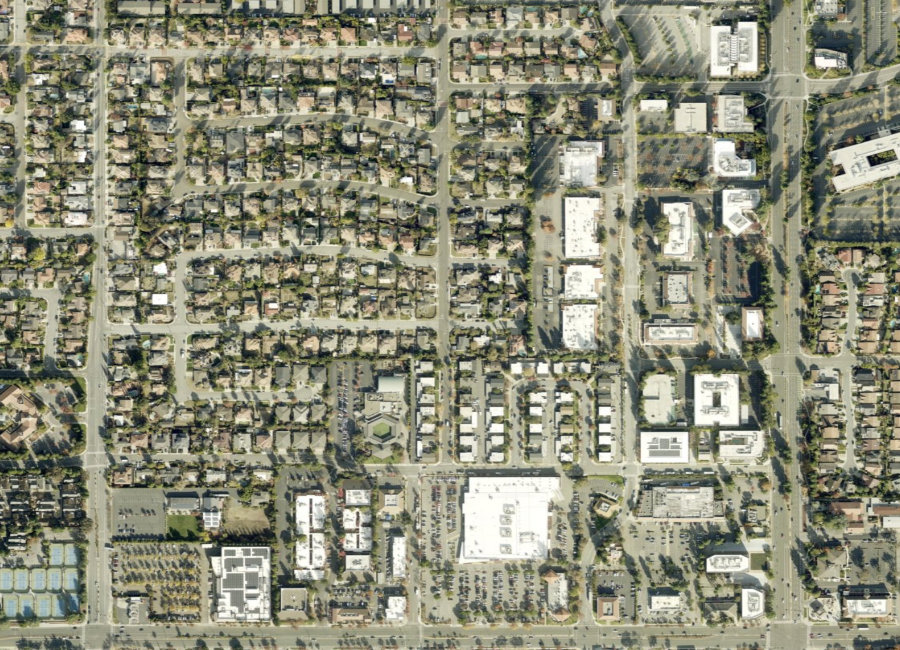
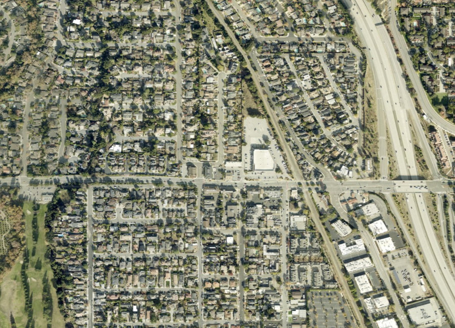

Santa Clara County · Silicon Valley
Home to Apple Park and consistently ranked among the top public school districts in California, Cupertino remains one of the most competitive housing markets in the state — well-priced homes in top school zones routinely go to contract within two weeks. Below you'll find current homes for sale and real estate listings in Cupertino, updated throughout the day, whether you're buying your first Silicon Valley home or preparing to sell into today's market.
If you'd like more information on any of these Cupertino listings, just reach out — we're happy to share disclosures, recent nearby sales, and pricing history, and to walk you through anything you're curious about.
And for your convenience, feel free to register for a free account to receive alerts whenever new Cupertino listings hit the market that match your criteria.
Source: Compass Market Insights, single-family homes in Cupertino, July 2026 — 20 closed sales. Updated 20 August 2026. Monta Vista, zoned for the most sought-after schools, regularly clears $4M+.
About the Community
Cupertino incorporated in 1955 after decades as a farming community known for prune, apricot, and cherry orchards — part of the "Valley of Heart's Delight." Apple and Hewlett-Packard both arrived in the 1960s, and today Apple Park, the company's 175-acre ring-shaped headquarters, anchors a city defined by strong schools and a concentration of tech wealth.
Why People Love It Here
Explore the Area

Top schools, highest price point

Established, relative value

Central, walkable to shopping

Foothill-adjacent, larger lots
Schools
Cupertino is served by the Cupertino Union School District (K–8) and Fremont Union High School District, alongside respected private options.
History
Named after Arroyo San José de Cupertino — now Stevens Creek — in honor of Saint Joseph of Cupertino, the area was a rural crossroads known simply as "West Side" through the 19th century, covered almost entirely in prune, apricot, and cherry orchards. Voters approved incorporation on September 27, 1955, making Cupertino Santa Clara County's 13th city that October.
The VALLCO Business and Industrial Park, formed in the early 1960s by pooling several large landowners' property, marked an early shift toward the tech economy that followed. Apple's arrival, and the completion of Apple Park in 2017, cemented Cupertino's identity as one of Silicon Valley's defining cities.
The Chen Team in Cupertino
We've helped families buy and sell across Cupertino's most sought-after streets. When you work with us, you get second-generation local knowledge and Compass's full resources.
// Replace with your verified production figures
Market Trends
Quarterly median sold price, single-family homes. Bars are drawn to scale from zero. Year-over-year compares Q2 2026 (60 closed sales) with Q2 2025 (72). Connect to live market data. Hover a bar for the exact figure.
Available Now